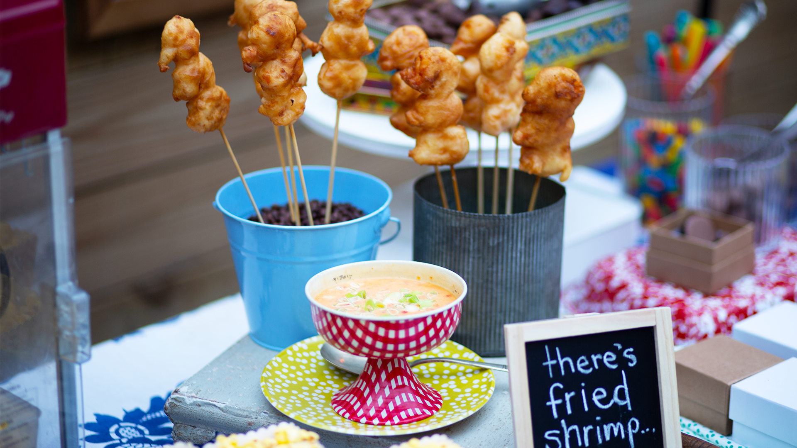

Oh you like shrimp? We got you bruh.
Ingredients:
- 1 1/2 cups all-purpose flour
- 3/4 cup cornstarch
- 1 1/2 tbs baking powder
- 1/2 tsp kosher salt
- 1 pound shrimp, peeled and deveined
- 1 1/2 cups cold club soda
- Canola oil, for frying
- BOOM BOOM sauce
Directions:
- Pour canola oil in a large heavy bottomed skillet or saucepan to a depth of 3 inches. Heat over medium high to 375°F.
- Whisk together flour, cornstarch, baking powder, and salt in a medium bowl. Skewer 3 shrimp on each 6-inch skewer; then dredge shrimp in flour mixture. Set skewers aside. Whisk club soda into flour mixture, then dip skewers into wet batter. Working in batches, fry battered skewers 2-3 minutes or until golden. Serve with boom boom sauce.